BLOCKOUT · UNREAL ENGINE
Cathedral Scene
A cathedral interior in Unreal Engine, from early greybox blockout to a lighting pass.
- StageGreybox & lighting
- StatusComplete
- ToolsCube meshes & BSP brushes
- EngineUnreal Engine
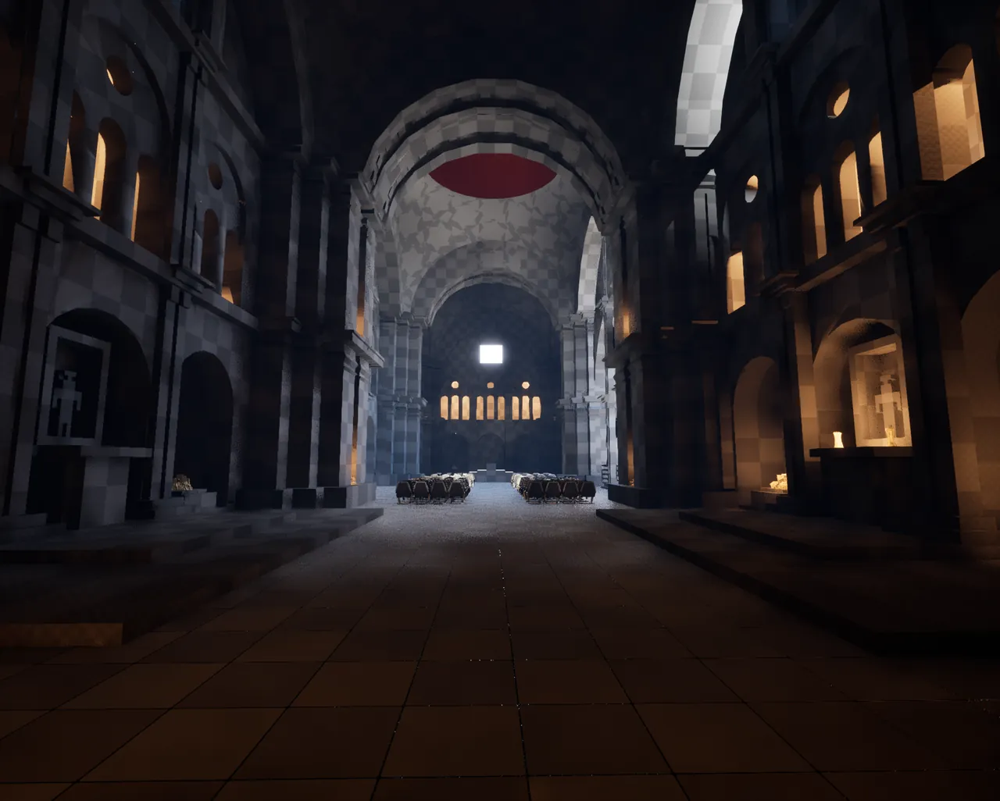
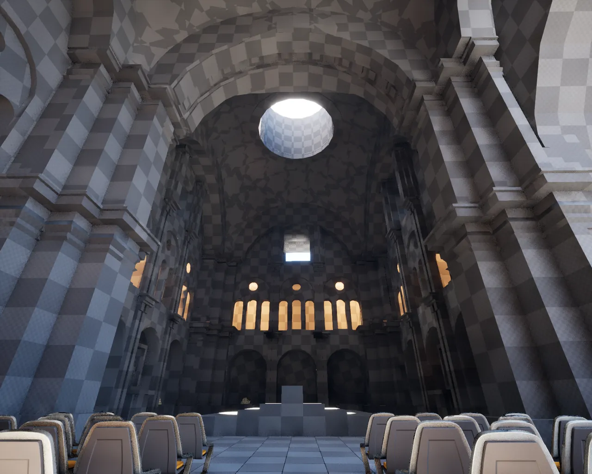
THE GOAL
Striking, but believable
My goal with this project was to really focus in on a singular area and flex my blockout muscles. I wanted to create a building that was visually striking while also feeling very grounded in reality and believable for the player.
I settled on a cathedral as they are recognisable, there is a tonne of reference material, and they hit the visually striking element really well.
Blocking out the shape
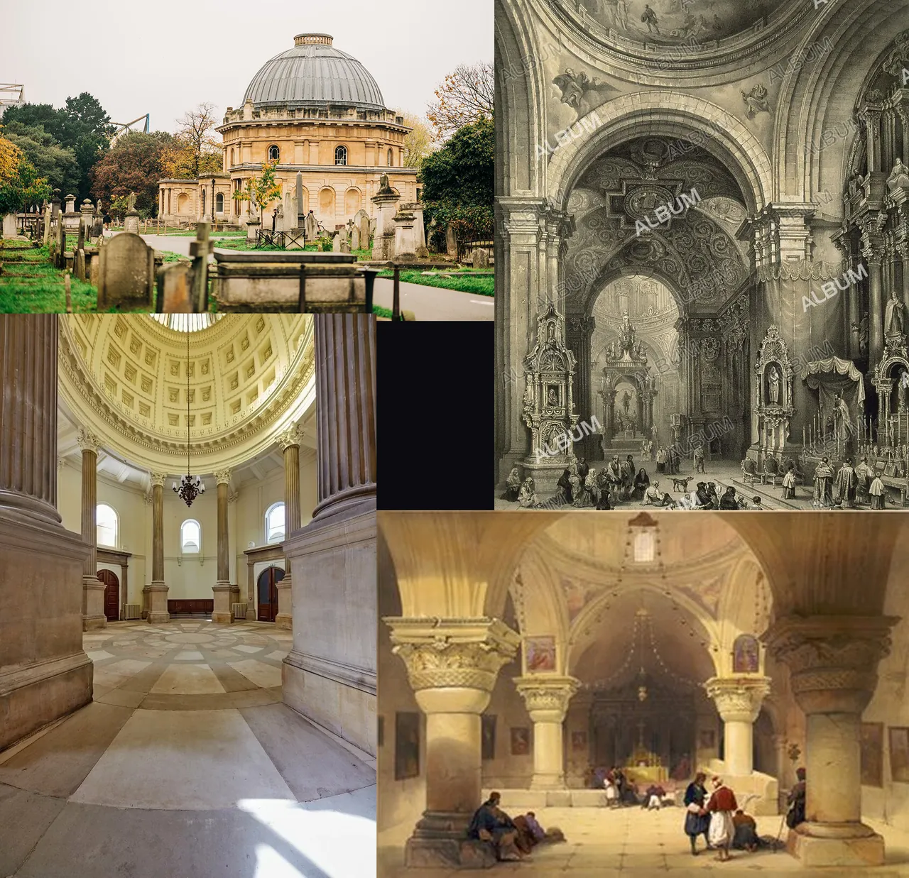
I began by collecting reference material for the overall shape and structure, and used it to start blocking out rough forms in the engine. After experimenting with these forms and figuring out what I could feasibly produce with cube meshes and BSP brushes, I locked in the basic shape.


Structure and detail
Once the basic shape was locked in, I went about adding more structural and decorative elements. At this point I collected more targeted reference images, so I could pull out specific elements I thought would cohesively suit the building.

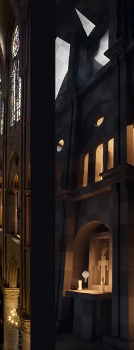

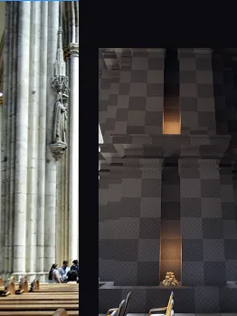

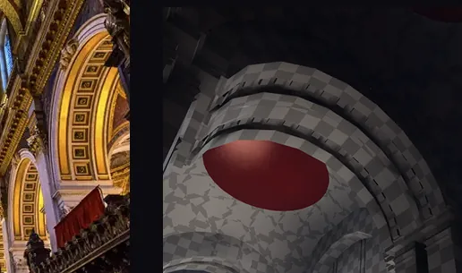

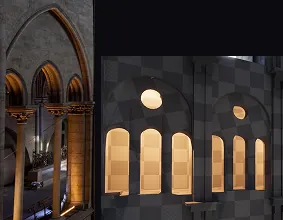

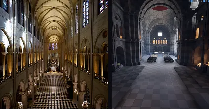

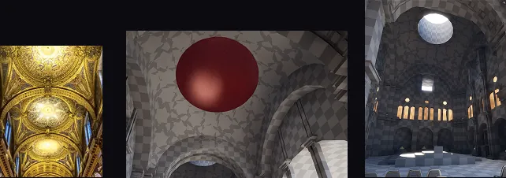
Lighting and framing

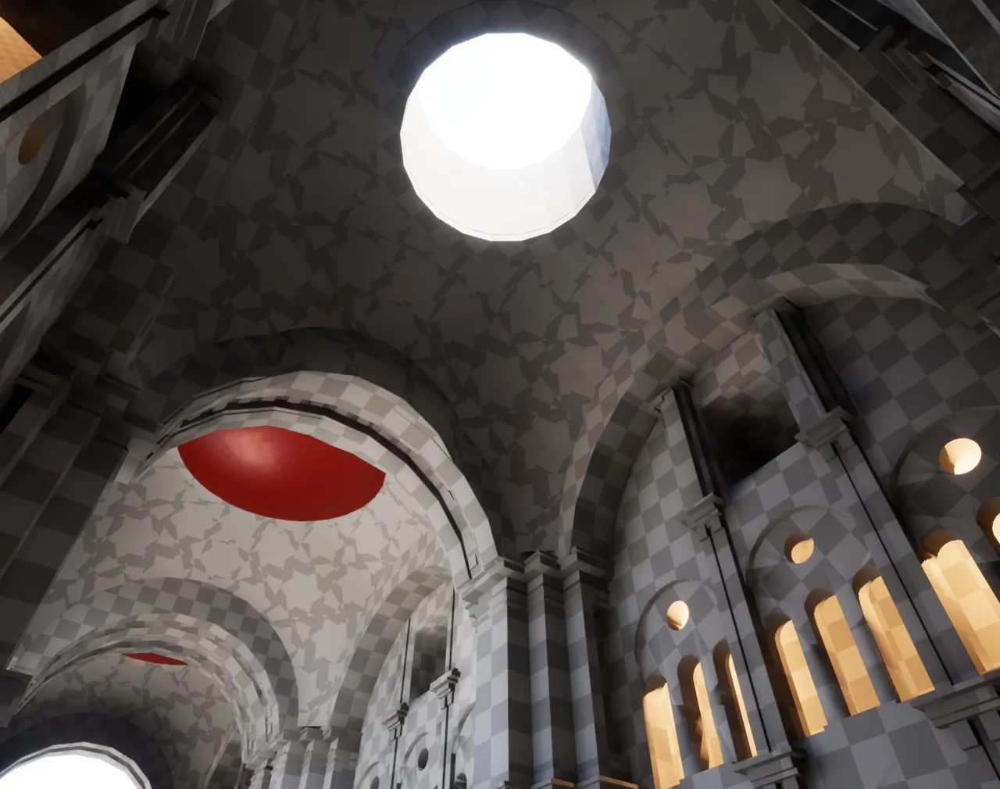

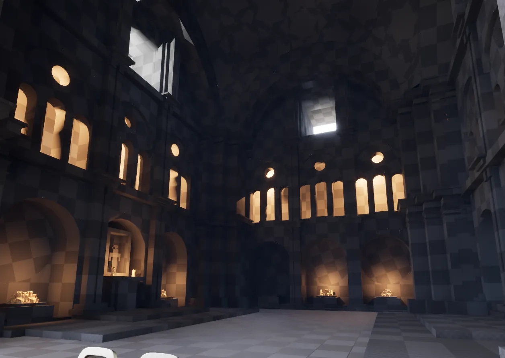
After this I began to think about lighting and framing. I wanted to strongly frame the end of the cathedral where the plinth was and chose to use natural light for that purpose. I made sure that the architecture supported this by opening the roof at the far end. I didn't just want a uniform light profile, though, so I added a secondary golden light evocative of candlelight in some of the higher areas of the cathedral, which served to break up the visuals and suggest that there was more to the scene out of sight.
Final result
I think I've ended up with a very strong visual grounded in reality and am happy to call it a success. I could definitely take it further, but for the purposes of a blockout that would be passed over to the rest of the team for feedback and art production, I believe it serves its purpose.

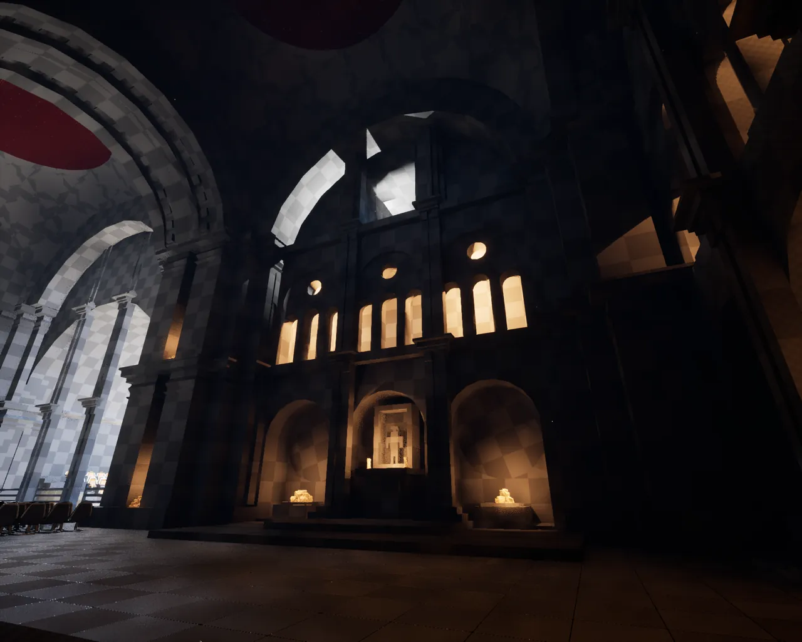

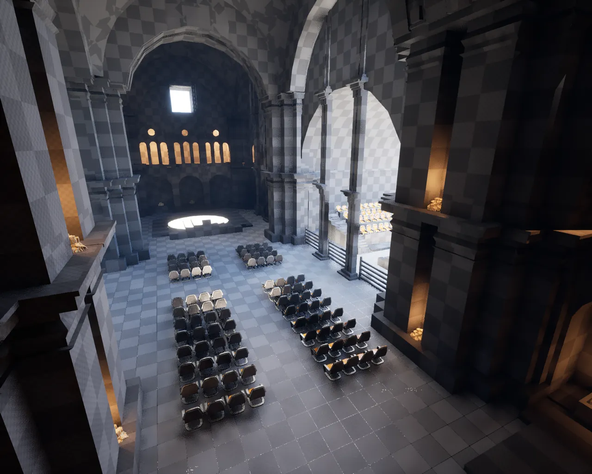

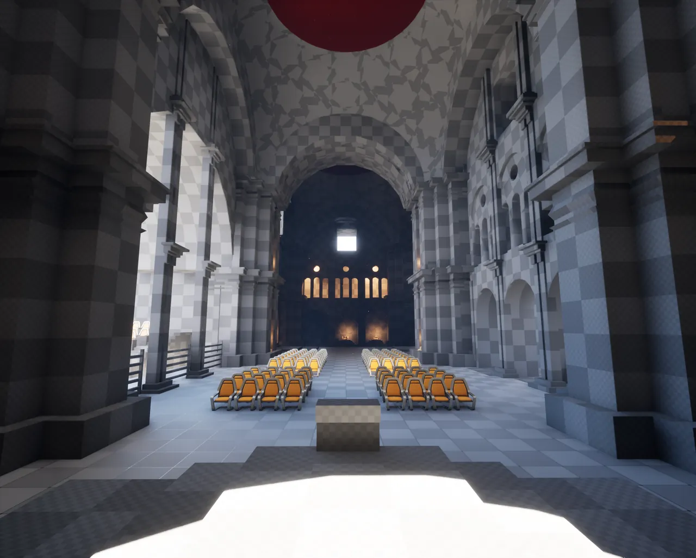

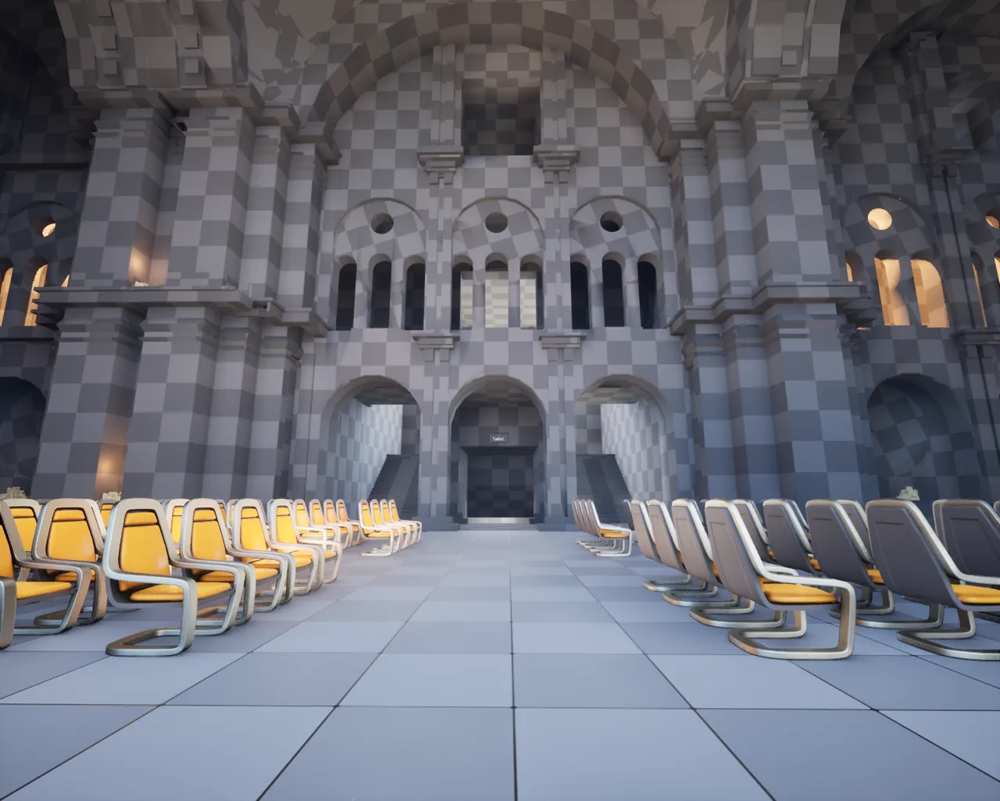

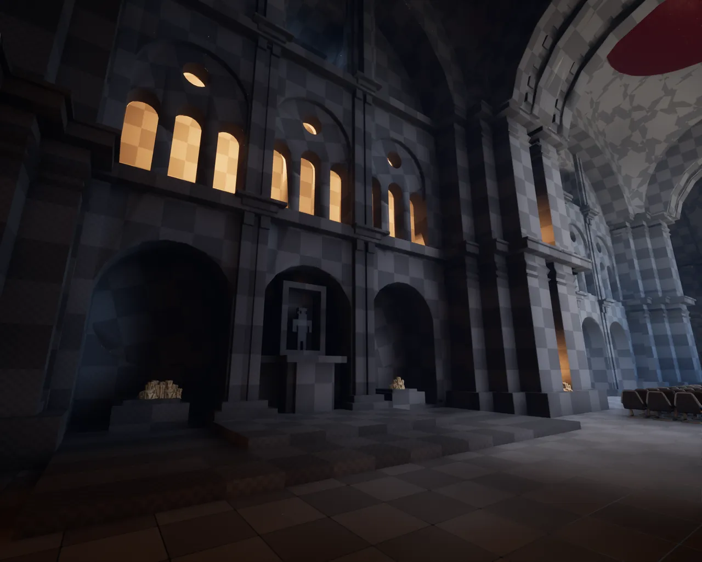